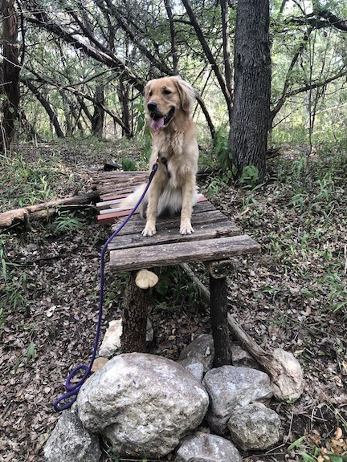

Contact me for any reason: suggestions on things to write about, comments, questions, criticisms, notifications for new posts, etc.
My Big Five personality traits scores (percentiles) using Open Psychometrics and Truity. Actual scores from each test are separated by the slash.
I am very much a morning person. I scored 62, or "Moderate Morning", on Horne and Östberg's morning-evening questionnaire.
See how some of the following items affected my life in my Life Improvements post.
I am making it a point to only write when I want to. No forcing myself, no saying just 15 minutes, no guilting. Myself and others have found that hobbies' fun factors tend to quickly fade once they become a "chore".
I write about things that interest me (although there may be some parts within the subject that don't interest me). My writings are never "finished"—I (try to) update them as I or information changes.
I own four bicycles:
I've built a few small features in the forest behind my parent's house (see below).
My Pinkbike account is Morsinator. I've made a few edits and tutorials, but no longer actively use the account.
A few of my favorite mountain biking media:
I read these every few months.
You can find all of my book reviews here.
I try to keep the website design as simple as possible:
Other notes:
head section. I use it out of curiosity about the number of homepage views I get. It tracks nothing else, nor do I do anything with the data. Every possible setting that page view measurement doesn't need is turned off.